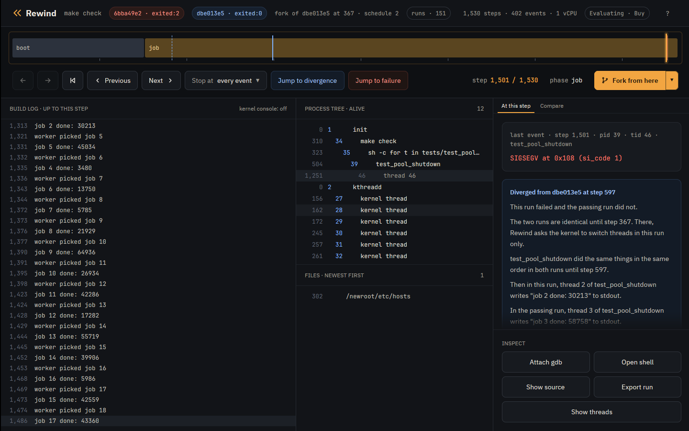

Tutorial · Container
Tutorial: a flaky test in a container
This tutorial takes a container image whose tests fail now and then, has Rewind VM find a failing run, looks at the crash, and checks the fix across 64 thread interleavings. It needs no Nix.
The image is built from mylib, a small C thread pool in
examples/mylib,
with the Containerfile next to its source. Its pool_shutdown frees the job
queue before joining the workers, so a worker still finishing a job can write through a
freed, nulled pointer.
Every transcript below is real output from rewind on a 16 core AMD laptop.
Install
You need x86_64 Linux with KVM, Docker or Podman, and gdb.
$ curl -fsSL https://rewindvm.dev/install | REWIND_WITH_DEBUG=1 sh
$ ls -l /dev/kvm
crw-rw-rw- 1 root kvm 10, 232 Oct 1 20:17 /dev/kvm
The script unpacks the latest
release under
~/.local/share/rewind, links rewind and
rewind-app into ~/.local/bin, and with
REWIND_WITH_DEBUG=1 adds the VM kernel's debug symbols for
rewind gdb. The command is static and brings the VM's kernel, so the host
needs nothing else. If /dev/kvm is not yours to use, add yourself to the
kvm group. On AMD, run sudo rewind pmu enable once after each
boot; Counter time says why.
The flaky test
Clone the repository and build the image, which compiles mylib on Debian:
$ git clone https://github.com/fzakaria/rewindvm
$ cd rewindvm/examples/mylib
$ docker build -t mylib -f Containerfile .
On the host, docker run --rm mylib runs make check and usually
passes. Run 60 times, it failed 3 times:
$ docker run --rm mylib
running tests/test_pool_basic
...
running tests/test_pool_shutdown
...
worker picked job 17
job 16 done: 5986
Segmentation fault (core dumped)
make: *** [Makefile:18: check] Error 1Run it again and it usually passes, leaving nothing to look at.
Run it in Rewind VM
rewind runs a command in any root filesystem, such as the tarball
docker export writes, inside a deterministic virtual machine:
$ docker export $(docker create mylib) -o mylib.tar
$ rewind run --root mylib.tar --cwd /src -- make check
...
round 3: ok
test_pool_shutdown: ok
rewind: run dbe013e52eb8d4a2 exited:0 after 1322 steps, 0.019s virtual, 2.107s wall (poweroff)It passes, in the same 1322 steps every time. Nothing the command writes reaches your disk. A run's id is the hash of its inputs, so your image makes ids other than these.
Find a failing interleaving
rewind check runs it again under perturbed schedules, which reschedule and
stall the VM's threads at different points, and stops at the first batch in which a run
ends differently:
$ rewind check --root mylib.tar --cwd /src -- make check
schedule 0: exited:0 1322 steps run dbe013e52eb8d4a2
schedule 1: exited:0 1491 steps run 2a36f6a977d4c74f
schedule 2: exited:0 1558 steps run b9191b5c442f31f1
schedule 3: exited:0 1493 steps run 968666bc01b5ec53
schedule 4: exited:2 1547 steps run 1cc1773bcdaaac93
schedule 5: exited:0 1564 steps run 01d28dacd8858ac4
schedule 6: exited:0 1631 steps run fde03f81dc2cb6d0
schedule 7: exited:0 1462 steps run ff3b5aaf8e6cd775
schedule 8: exited:0 1539 steps run 0601e3243e96c8d3
schedule 9: exited:0 1531 steps run 922476411bc56c9b
schedule 10: exited:2 1308 steps run 1a2f67c3a562b2c8
schedule 11: exited:0 1543 steps run 3e384af50e720a39
schedule 12: exited:0 1634 steps run 286f22edf61f0008
schedule 13: exited:2 1308 steps run 45969ad1c3732643
schedule 14: exited:0 1603 steps run f8bfea7b0135ce05
schedule 15: exited:0 1566 steps run a571fb619a02f974
schedule 16: exited:0 1681 steps run 18e6c042d7151b85
schedule 4 ends differently from schedule 0; finding the step that decides it
schedule 4 limited to steps 367..1049 still ends differently
step 1048 decides it: a request to switch threads there makes the run fail
passing: run 045fa57259706650, schedule 4 over steps 367..1048
failing: run a92076519e7ec75a, schedule 4 over steps 367..1049
the two are the same run until step 1048
where ./tests/test_pool_shutdown first behaves differently:
both 1036 39/42 write(1, "job 15 done: 42559\n")
both 1037 39/42 write(1, "worker picked job 17\n")
both 1048 39/43 write(1, "job 16 done: 5986\n")
failing 1052 39/42 thread exit(test_pool_shutd) exited:0
failing 1057 39/43 SIGSEGV code=1 addr=0x108
failing 1059 39/39 SIGSEGV code=0 addr=0x0
failing 1061 39/43 thread exit(test_pool_shutd) killed:SIGSEGV
passing 1049 39/43 write(1, "worker picked job 18\n")
passing 1058 39/42 thread exit(test_pool_shutd) exited:0
passing 1068 39/43 thread exit(test_pool_shutd) exited:0
passing 1075 39/39 clone(CLONE_THREAD) = 44
open both in the desktop app: rewind open a92076519e7ec75a 1052 --compare 045fa57259706650
check narrows schedule 4's failure to one step, 1048. The passing run
perturbs the same steps less that one, and only the failing run gets a request to switch
threads there. The last block shows where the test's own output then differs. The search
took 39 seconds. --all tries every schedule:
$ rewind check --all --root mylib.tar --cwd /src -- make check | grep 'ended differently'
13 of 64 other schedules ended differentlyLook at the failure
$ rewind log a9207651 --steps | tail -4
1037 39 worker picked job 17
1048 39 job 16 done: 5986
1068 35 Segmentation fault
1072 34 make: *** [Makefile:18: check] Error 1
$ rewind events a9207651 --from 1048 --to 1059
1048 39/43 write(1, "job 16 done: 5986\n")
1052 39/42 thread exit(test_pool_shutd) exited:0
1055 0/0 console "[ 0.016841] test_pool_shutd[43]: segfault at 108 ip 00005635b75a4412 sp 00007f214d1e1ea0 error 6 in test_pool_shutdown[1412,5635b75a4000+1000] likely on CPU 0 (core 0, socket 0)"
1056 0/0 console "[ 0.016846] Code: 5f c3 0f b7 d3 44 89 f6 48 8d 3d 48 0c 00 00 b8 00 00 00 00 e8 6f fc ff ff 48 8b 3d 90 2c 00 00 e8 c3 fc ff ff 49 8b 44 24 58 <83> 80 08 01 00 00 01 e9 c6 fe ff ff 55 53 48 83 ec 08 be 78 00 00"
1057 39/43 SIGSEGV code=1 addr=0x108
1059 39/39 SIGSEGV code=0 addr=0x0
The kernel's report marks the faulting instruction,
<83> 80 08 01 00 00 01: addl $1, 0x108(%rax), which is
p->queue->completed++ with p->queue null. The processes
alive at the crash:
$ rewind ps a9207651 1057
1 /init
34 make check
35 /bin/sh -c for t in tests/test_pool_basic tests/test_pool_shutdown; do echo "running $t"; ./$t || exit 1; done
39 ./tests/test_pool_shutdown
43 (thread)Look inside the VM
rewind cat, rewind shell and rewind gdb work on a
throwaway fork of the run at a step. At the SIGSEGV, step 1057:
$ rewind cat a9207651 1057 src/pool.c --pid 39 | sed -n '/^void pool_shutdown/,/^}/p'
void pool_shutdown(struct pool *p)
{
pthread_mutex_lock(&p->lock);
p->stopping = 1;
pthread_cond_broadcast(&p->ready);
pthread_mutex_unlock(&p->lock);
/* The bug: the queue goes before the workers are joined. */
free(p->queue);
p->queue = NULL;
for (int i = 0; i < POOL_WORKERS; i++)
pthread_join(p->workers[i], NULL);
pthread_cond_destroy(&p->ready);
pthread_mutex_destroy(&p->lock);
free(p);
}
$ printf 'pwd; ls; exit\n' | rewind shell a9207651 1057 --pid 39
rewind: a shell at step 1057 of a92076519e7ec75a; exit it to leave
[rewind] /src # pwd; ls; exit
/src
Containerfile Makefile libmylib.a src tests
rewind gdb loads the symbols of the VM's kernel and of the process running at
the step. Debian strips its libc; DEBUGINFOD_URLS names Debian's debuginfod
server, which has its symbols. From step 1048, thread 43's last write, continue to the
line that faulted:
$ DEBUGINFOD_URLS=https://debuginfod.debian.net rewind gdb a9207651 1048 -- -batch -ex 'break src/pool.c:77 if p->queue == 0' -ex continue -ex 'bt 3' -ex 'p p->queue' -ex list
rewind: step 1048 ran in process 39; loading symbols for 3 of its files
rewind: fetched 12 source files from the VM
rewind: gdb 16 cannot read thread-local variables, such as errno, at a step; gdb 17 or later can
rewind: gdb at step 1048 of a92076519e7ec75a
Downloading 3.97 M separate debug info for /tmp/claude-1000/-home-fmzakari-code-github-com-fzakaria-fzakaria-com/0c598647-cfe7-4d06-963b-cbeeebcd2959/scratchpad/rec-all-work/home/gdb/341589/newroot/usr/lib/x86_64-linux-gnu/libc.so.6...
Downloading 539.96 K separate debug info for /tmp/claude-1000/-home-fmzakari-code-github-com-fzakaria-fzakaria-com/0c598647-cfe7-4d06-963b-cbeeebcd2959/scratchpad/rec-all-work/home/gdb/341589/newroot/usr/lib/x86_64-linux-gnu/ld-linux-x86-64.so.2...
arch_local_irq_restore (flags=514) at ./arch/x86/include/asm/irqflags.h:146
146 return !(flags & X86_EFLAGS_IF);
[Switching to thread 4 (Thread 1.43)]
Download failed: Invalid argument. Continuing without source file ./io/../sysdeps/unix/sysv/linux/write.c.
#0 __GI___libc_write (nbytes=18, buf=0x7f2148000b70, fd=1) at ../sysdeps/unix/sysv/linux/write.c:26
warning: 26 ../sysdeps/unix/sysv/linux/write.c: No such file or directory
Breakpoint 1 at 0x5635b75a440d: file src/pool.c, line 77.
[Thread 1.42 exited]
Thread 4 hit Breakpoint 1, worker (arg=0x5635c5889680) at src/pool.c:77
77 p->queue->completed++;
#0 worker (arg=0x5635c5889680) at src/pool.c:77
#1 0x00007f214d26f1f5 in start_thread (arg=<optimized out>) at ./nptl/pthread_create.c:442
#2 0x00007f214d2ef8ec in clone3 () at ../sysdeps/unix/sysv/linux/x86_64/clone3.S:81
$1 = (struct queue *) 0x0
72 * the bug. */
73 long result = run_job(job);
74 if (!p->stopping) {
75 printf("job %d done: %ld\n", job, result & 0xffff);
76 fflush(stdout);
77 p->queue->completed++;
78 }
79 }
80 }
81
[Inferior 1 (process 1) detached]
Debian's server has libc's symbols but not its sources, so libc's frames show no source
and gdb prints Download failed: Invalid argument for each.
Images built on Fedora, Ubuntu or Arch have debuginfod servers of their own, listed by elfutils.
Replay it
$ rewind replay a9207651
identical to the recording: 319 events and 13 read and write records over 1081 steps
$ rewind replay a9207651 --from 367
identical to the recording from the snapshot at step 256 to the end (0.60s)
--from starts at the nearest keyframe before the step. A run replays on any
machine with the same CPU vendor that has the features of the run's CPU model.
Fork it
$ rewind fork dbe013e5 367 --schedule 1 --quiet
rewind: run f632c83c5cc6e143 exited:0 after 1447 steps, 0.020s virtual, 0.564s wall (poweroff)
rewind: the fork first differs from its parent at step 382
rewind: open it beside its parent in the desktop app: rewind open f632c83c5cc6e143 382 --compare dbe013e52eb8d4a2
$ rewind fork dbe013e5 367 --schedule 2 --quiet
rewind: run 6bba49e2396acf82 exited:2 after 1530 steps, 0.021s virtual, 0.564s wall (poweroff)
rewind: the fork first differs from its parent at step 384
rewind: open it beside its parent in the desktop app: rewind open 6bba49e2396acf82 384 --compare dbe013e52eb8d4a2
$ rewind fork dbe013e5 367 --schedule 3 --quiet
rewind: run fde9b90230c9caa8 exited:0 after 1498 steps, 0.021s virtual, 0.567s wall (poweroff)
rewind: the fork first differs from its parent at step 384
rewind: open it beside its parent in the desktop app: rewind open fde9b90230c9caa8 384 --compare dbe013e52eb8d4a2
$ rewind fork dbe013e5 367 --schedule 4 --quiet
rewind: run 351316d3373c1d32 exited:2 after 1082 steps, 0.017s virtual, 0.552s wall (poweroff)
rewind: the fork first differs from its parent at step 385
rewind: open it beside its parent in the desktop app: rewind open 351316d3373c1d32 385 --compare dbe013e52eb8d4a2From step 367 of the schedule 0 run, some schedules crash and some pass.
Scrub it in the app
The desktop app shows a run on a timeline: drag the playhead to any step for the output, processes, files and event there, jump to the failure or to where the run left the passing one, and fork from the playhead.

$ rewind-app ~/.local/share/rewind/runs/a92076519e7ec75a --compare ~/.local/share/rewind/runs/045fa57259706650
Press f to jump to the failure at step 1057, then s to open the source panel. After a few
seconds it shows worker at src/pool.c:77, with
p->queue->completed++; marked: the line that read the queue after
pool_shutdown had set it to NULL. The t key shows which thread held the CPU
around where the two runs part.
Fix it and check the fix
In src/pool.c, count the job under the lock, and free the queue after the
workers are joined:
@@ -71,11 +71,13 @@
* stopping. The check and the count are not under the lock:
* the bug. */
long result = run_job(job);
+ pthread_mutex_lock(&p->lock);
if (!p->stopping) {
printf("job %d done: %ld\n", job, result & 0xffff);
fflush(stdout);
p->queue->completed++;
}
+ pthread_mutex_unlock(&p->lock);
}
}
@@ -120,12 +122,10 @@
pthread_cond_broadcast(&p->ready);
pthread_mutex_unlock(&p->lock);
- /* The bug: the queue goes before the workers are joined. */
- free(p->queue);
- p->queue = NULL;
-
for (int i = 0; i < POOL_WORKERS; i++)
pthread_join(p->workers[i], NULL);
+ free(p->queue);
+ p->queue = NULL;
pthread_cond_destroy(&p->ready);
pthread_mutex_destroy(&p->lock);
free(p);Rebuild the image, export it, and check again:
$ docker build -q -t mylib -f Containerfile . && docker export $(docker create mylib) -o mylib.tar
sha256:72612b337900e993daca4aaa26a466990a0929e2dbeb0cc9a4aa327cd37393d7
$ rewind check --all --root mylib.tar --cwd /src -- make check
...
0 of 64 other schedules ended differently
same result under all 65 schedulesBefore the fix, 13 of the same 64 schedules crashed.
Limits
The VM has one vCPU, so threads interleave but never run at the same instant: a race between plain loads and stores with no system call between them is out of reach, while races across a system call, a lock or a sleep, like this one, are in reach. The container runs with no network. Design has the full list.
What to read next
- The Nix tutorial: the same bug as a Nix derivation.
- The advanced tutorial: threads, watchpoints, the kernel's side of a crash, sharing a run and more.
- Counter time: how the VM's clock follows its work.
The engine is free and MIT licensed. The desktop app is $49 personal or $99 per seat.